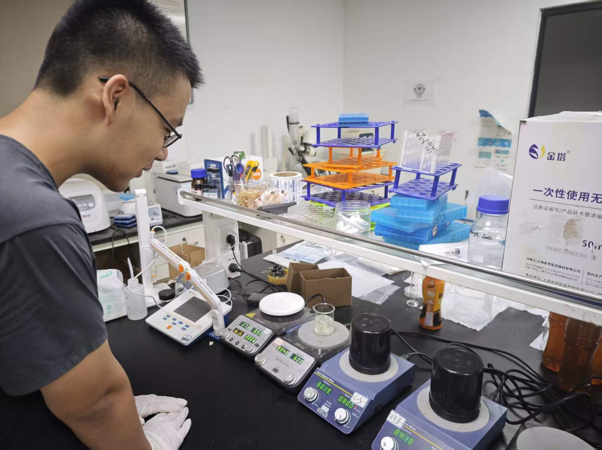
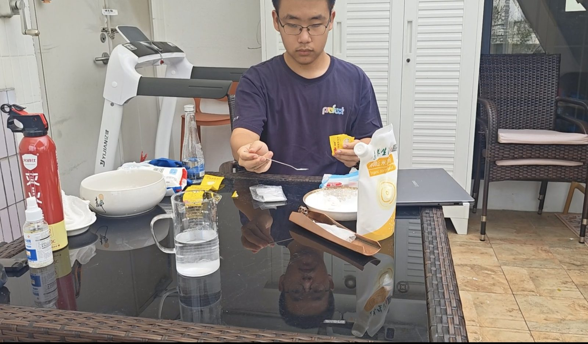
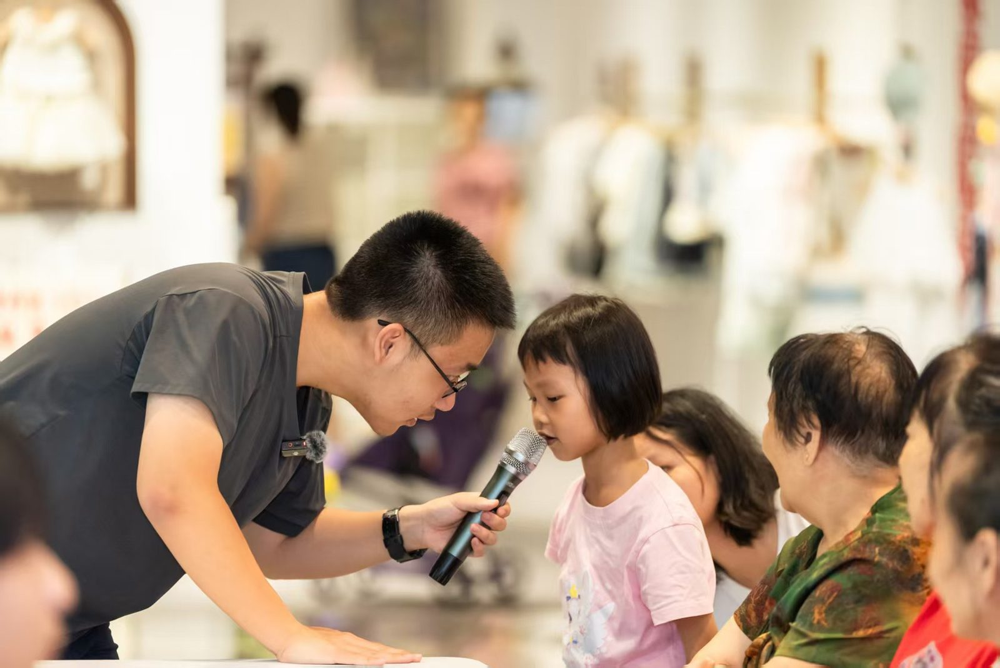
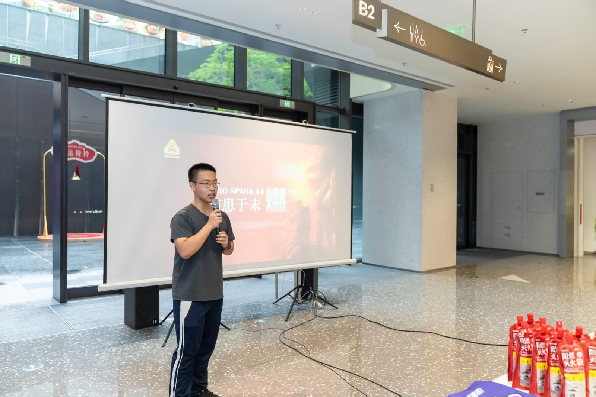

2026 · 07
防火最大的缺口，不是知道，而是相信
从一次火警演练说起，解释为什么"知道"和"相信"是两件事，以及这如何塑造了我做 Chemisfun 的方式。
I'm Jason Shang — a high-school researcher working on hydrogels, fire-safe materials, and skin repair. I build products that go into real homes, and I write science that real people can believe.
灭火和皮肤修复，表面上一个面向环境、一个面向身体，本质上都在回答同一个问题—— 材料如何在极端条件下保护脆弱系统？
我从初三开始研究灭火材料，把一个原型带进了真实的家庭和学校。后来我开始做 Chemisfun，把复杂的化学讲给普通人听。再后来我走进了实验室，跟随 Garcia 教授研究水凝胶，把同一类材料思维从环境推向身体——伤口愈合、组织修复、皮肤屏障。
这条线串起来只有一个动作：用材料保护脆弱系统。
材料层 · 产品层 · 人性层。第三层是我和大多数科研型申请者拉开差距的地方—— 真正的安全不只来自技术，也来自人愿意相信风险。
什么材料能灭火、降温、修复？
从水凝胶的分子网络，到灭火涂层的热力学机制，到组织修复中的生物相容性—— 我想理解材料在极端条件下为什么工作，而不只是是否工作。
材料如何进入真实家庭、学校、宿舍、社区？
一个只在实验室里"work"的东西，对我来说还不够。我做的灭火材料原型真的被装进了 校园宿舍和社区消防角。SafeHome 是这条产品线的延伸—— 从烧杯到货架，每一毫米都要被打磨。
为什么人明知道风险，却不相信灾难会发生？
我研究防火、做过科普、知道火灾危险。但火警响起的一瞬间， 我的第一反应仍然是"不可能是真的"。这一秒让我意识到—— 真正的缺口不在知道，而在相信。
"The biggest gap in fire safety isn't knowing — it's believing. My work is to close that gap, one material, one product, one honest sentence at a time." — From my Common App essay
从分子到人群——这些项目不是平行的活动列表，而是同一条主线在不同尺度的展开。

材料如何在极端条件下保护人体？
在 Garcia 教授课题组参与水凝胶方向研究，关注材料结构、生物相容性与伤口微环境的耦合。 正在推进一项关于 skin repair 的实验，目标产出论文 / 海报 / 推荐信三选一。

把家庭灭火材料从实验室搬进真实场景。
自主研发灭火涂层 / 灭火贴片 / 应急包，已经进入校园宿舍、社区消防角与多个真实家庭试点。 产品设计紧扣"让一个不想准备的人也能用"。

把复杂化学讲给愿意相信的人。
化学科普平台 / 公众号 / 视频 / 线下实验。把"我懂化学"变成"我能让你也懂"。 我相信这是材料科学落地前最被低估的一环。

深中国际部 · 一份不模板化的申请画像。
GPA 4.52 / SAT 1570 / TOEFL 117 / 11门 AP 全 5。 但数字从来不是人设——它们只是入场券。
这条线不是规划出来的，是被一次次真实场景推出来的。
校园火警演练。我研究防火，知道风险——但警报响起的第一秒，反应还是"不可能是真的"。这秒，成了我后来所有项目的种子。
自研灭火涂层与应急包，进入深中宿舍与深圳社区消防角。产品形态在真实场景里反复被打磨。
化学科普平台正式运行。开始写"普通人能听懂、愿意相信、愿意行动"的化学。
进入水凝胶课题组，把同一类材料思维从环境推向身体——皮肤修复、组织修复、伤口愈合。
所有主线汇合：化学 / 材料科学 / 产品落地 / 社区影响 / 跨学科好奇心。Stanford REA → JHU ED2 → UC 系统 / UPenn 等。
一些我写下来的东西——关于材料、风险、与相信的成本。
从一次火警演练说起，解释为什么"知道"和"相信"是两件事，以及这如何塑造了我做 Chemisfun 的方式。
同一个分子网络，既能灭火，也能修复皮肤——这中间发生了什么？我在 Garcia Lab 的第一年笔记。
一个产品能不能被使用，取决于它有没有降低人的心理阻力，而不是它有多"正确"。
不删术语、不降智、不夸张。把自己当一个诚实的朋友。
对材料科学、产品落地、风险传播、或者申请季本身有任何想法—— 都欢迎写信给我。我会认真读每一封。
Shenzhen, CN · Class of 2027 · Materials Science, Chemistry